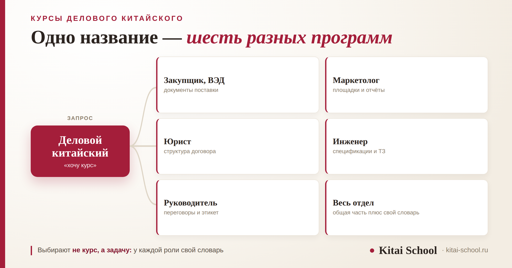
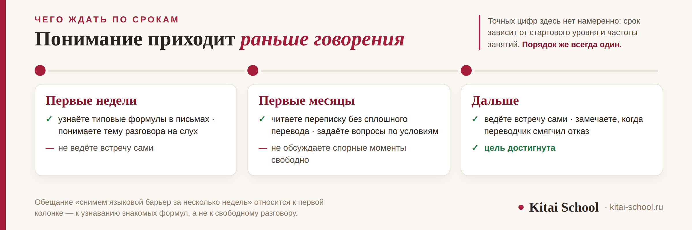

Выбор программы
Курсы делового китайского языка: как выбрать программу под свою задачу и не бросить на полпути


Запрос «курсы делового китайского языка» выглядит как название одного продукта, а за ним стоят минимум шесть разных программ. Закупщику, юристу и маркетологу нужен разный словарь, и общий курс даёт всем троим одно и то же — отсюда и ощущение, что занятия идут, а на работе ничего не меняется. Разберём, как понять свою задачу до оплаты, что должно быть в программе, по каким признакам курс лучше не брать и что реально меняется за первые недели.
«Деловой китайский» — зонтичное название. Выбирать надо не курс, а задачу: под каждую роль свой словарь. Сначала база, потом специализация — деловые формулы ложатся сверху на обычный язык. В программе должно быть семь вещей, и первая из них — ваши собственные материалы. За первые недели меняется одно: вы начинаете узнавать формулы в письмах. Бросают по четырём причинам, и все они устранимы.
Почему «курс делового китайского» — это не один курс
Деловой китайский — не отдельный язык, а другой регистр: те же грамматика и иероглифы, но иной подбор слов и устойчивых оборотов. Что именно в этом регистре работает на переговорах и в переписке, мы разбирали отдельно: китайский язык для бизнеса.
Трудность в другом. Под одним названием продают программы, которые пересекаются процентов на тридцать. Общая часть — приветствия, формулы вежливости, обсуждение условий. Всё остальное зависит от того, какие документы вы читаете и с кем разговариваете.
Проверить это легко на своей переписке. Откройте последние двадцать рабочих писем и посмотрите, из чего они состоят. У одного человека там сроки отгрузки и номера позиций, у другого — условия договора, у третьего — обсуждение сроков и вежливые напоминания. Общего в этих трёх наборах меньше трети.
Практический вывод: вопрос «какой курс делового китайского лучше» не имеет ответа, пока не задан другой — какую задачу он должен закрыть. Иначе курс закроет чужую.
Сначала база, потом специализация
Это правило нарушают чаще всего, а оно простое: деловые формулы ложатся сверху на обычный язык. Без грамматической основы они не держатся — человек заучивает фразу целиком и не может её изменить, когда разговор идёт не по сценарию.
Разумный порог для старта — грамматика и словарь примерно уровня HSK 3–4. Ниже этого деловой курс превращается в заучивание реплик, которые перестают работать при первом же неожиданном вопросе.
Есть исключение: если задача узкая и повторяющаяся — например, читать прайсы одного поставщика, — набор конечен, и его осваивают раньше. Но это не «деловой китайский», а конкретный рабочий навык.
Шесть ролей и что нужно каждой
Самый быстрый способ выбрать программу — найти свою строку.
| Кто вы | Что нужно в первую очередь | Подробный разбор |
|---|---|---|
| Закупщик, менеджер ВЭД | документы поставки, условия, сроки, рекламации | курс по логистике |
| Маркетолог | площадки, рекламный кабинет, отчёты по кампаниям | курс по маркетингу |
| Юрист, контрактник | структура договора, что читать первым | юридический китайский |
| Инженер, технолог | документация, спецификации, техническое задание | технический китайский |
| Руководитель, продажи | переговоры, переписка, этикет | деловой китайский и 50 фраз |
| Весь отдел сразу | общая часть плюс словарь подразделения | корпоративный китайский |
Строки не исключают друг друга: у закупщика бывают и переговоры, и документы. Но порядок важен — начинать стоит с того, что отнимает больше рабочего времени прямо сейчас.

Что должно быть в программе: семь пунктов
Описания курсов похожи одно на другое, поэтому проверяйте не обещания, а состав.
| Пункт | Зачем |
|---|---|
| Ваши материалы | переписка и документы вашей компании, а не учебные диалоги про абстрактную фирму |
| Шаблоны писем | типовые формулы начала и конца, запрос и напоминание; их не сочиняют заново каждый раз |
| Вежливый отказ и вежливое «нет» в ответ | формулы, которые звучат как согласие, а означают отказ, — на них теряют недели |
| Цифры и единицы | самая дорогая ошибка в переговорах; разобрано в разборе деловой лексики |
| Работа над произношением | если вас переспрашивают, встреча идёт медленнее: корректировка произношения |
| Этикет вместе с языком | порядок обращений и поведение на встрече: бизнес-этикет в Китае |
| Понятный результат | программа говорит, что вы сможете делать к концу, а не обещает снять барьер |
Последний пункт проверяется одним вопросом менеджеру курса: что я смогу делать к концу программы, чего не могу сейчас. Внятный ответ на него — хороший признак.
Отдельно про обращения: это место, где ошибаются чаще всего и где ошибка заметна сразу. Как устроено обращение по должности, разобрано в статье обращение в деловом письме.
Менеджер по закупкам пришёл ко мне после полугода на общем курсе делового китайского. Занятия он не пропускал, домашние задания делал, но сказал фразу, которую я слышу часто: «Такое чувство, что учу не то».
Мы посмотрели, что он проходил. Презентация компании,светская беседа на деловом ужине, тосты, обсуждение корпоративных ценностей. Всё это существует и кому-то нужно. А его рабочий день состоял из другого: переписка с фабрикой, сроки отгрузки, претензии по качеству.
Мы поменяли материал: взяли его собственную переписку за последний месяц. Через три занятия он разобрал письмо от фабрики сам — впервые за полгода. Курс был неплохой. Просто не его.
Четыре признака курса, который не стоит брать
- Обещание снять языковой барьер за несколько недель. За несколько недель появляется узнавание знакомых формул. Почему это не то же самое, что владение языком, разобрано в статье как быстро выучить китайский.
- Один курс для всех отраслей. Если программа одинакова для логиста, юриста и маркетолога, две трети времени уйдёт на чужой словарь.
- Только заученные диалоги. Выученная наизусть речь перестаёт помогать, как только вопрос идёт не по сценарию.
- Нет говорения вслух. Если на занятиях вы в основном слушаете и читаете, на встрече заговорить не получится. Устная речь ставится отдельно, и для неё есть свой экзамен: HSKK.
Чего ждать: первые недели, первые месяцы
Отвечу по срокам, потому что здесь обычно дают обещания, которые потом не сходятся.
| Срок | Что меняется | Чего ещё нет |
|---|---|---|
| Первые недели | узнаёте типовые формулы в письмах, понимаете тему разговора на слух | не ведёте встречу сами |
| Первые месяцы | читаете переписку без сплошного перевода, задаёте вопросы по условиям | не обсуждаете спорные моменты свободно |
| Дальше | ведёте встречу сами и замечаете, когда переводчик смягчил отказ | — |
Сроки зависят от стартового уровня и частоты занятий, поэтому точных цифр здесь не будет. Но порядок именно такой: понимание приходит раньше говорения, и это нормально.
Почему бросают на полпути — и что с этим делать
Четыре причины, и ни одна из них не про способности.
- Размытая цель. «Выучить деловой китайский» — это не цель, её нельзя достичь и нельзя проверить. Рабочая формулировка звучит иначе: «читать переписку с поставщиком без переводчика».
- Начали со специализации без базы. Формулы не держатся на пустом месте, человек не видит продвижения и уходит.
- Между занятиями язык не применяется. Если новые обороты не попадают в рабочую переписку в течение недели, они не закрепляются.
- Ждали результата через месяц. Не дождались — решили, что не получается. Хотя по срокам всё шло нормально.
Противоядие от всех четырёх одно: сформулировать задачу в проверяемом виде и назначить срок проверки честно. Не «буду свободно говорить к лету», а «к декабрю читаю письма поставщика сам».
Как проверить себя по дороге
Чтобы не выяснять через полгода, что учили не то, полезно останавливаться и сверяться. Три проверки, которые занимают по десять минут.
- Раз в месяц — своя переписка. Возьмите рабочее письмо и прочитайте без переводчика. Не всё поняли — нормально, важна динамика: месяц назад было понятнее или нет.
- Раз в два месяца — запись голоса. Скажите вслух то, что сказали бы на встрече, и послушайте. Это единственный способ заметить, что произношение стоит на месте.
- Раз в квартал — формулировка цели. Перечитайте, что вы записали в начале. Если цель по-прежнему звучит как «выучить деловой китайский», её нужно переписать конкретнее.
Эти проверки заодно защищают от второй беды — ощущения, что прогресса нет. Он обычно есть, просто незаметен изнутри: язык прибавляется небольшими долями, и разницу видно только в сравнении с прошлым месяцем.
Формат: группа, индивидуально или для компании
Коротко, потому что выбор здесь предсказуем.
- Группа дешевле и хорошо работает для общей деловой части: формулы, этикет, переписка.
- Индивидуально нужно, когда задача узкая: ваши документы, ваша отрасль, ваш график.
- Корпоративный формат имеет смысл, когда язык нужен нескольким сотрудникам одного отдела. Как собирают такую программу и как измеряют прогресс, разобрано отдельно: корпоративный китайский.
Разумная середина для одного человека выглядит так: общая часть в группе, отраслевая — индивидуально, и не наоборот. Причина в порядке: общее одинаково для всех и дешевле берётся в группе, а отраслевое у каждого своё, и платить за него в группе бессмысленно — половину времени вы будете слушать чужой словарь.
Не знаете, с какой строки таблицы начать? Принесите на первое занятие свою переписку или документ — посмотрим, что в них трудно, и соберём программу под вашу задачу. Для компаний есть корпоративное обучение. Оставить заявку или написать в Telegram.
Частые вопросы (FAQ)
Что входит в курсы делового китайского языка?
Под этим названием продают разные программы, и это главная сложность выбора. Общий деловой курс обычно даёт лексику переговоров, формулы переписки и этикет. Отраслевые курсы добавляют свой словарь: у логиста это документы поставки, у маркетолога — рекламные площадки, у юриста — структура договора. Прежде чем платить, стоит понять, какая из этих программ закрывает вашу задачу.
С какого уровня можно начинать деловой китайский?
Нужна база: грамматика и общий словарный запас примерно уровня HSK 3–4. Деловые формулы ложатся сверху на обычный язык, а без грамматической основы они не держатся — человек заучивает фразу и не может её изменить, когда разговор идёт не по сценарию. Начинать деловой курс с нуля означает учить два предмета одновременно.
Чем деловой китайский отличается от обычного?
Это не отдельный язык, а другой регистр: те же грамматика и иероглифы, но иной подбор слов и устойчивых оборотов. Главная разница в том, что в деловом общении важен не только смысл сказанного, но и форма: вежливый отказ звучит как согласие, а прямая формулировка может быть воспринята как грубость.
Что реально меняется за первые недели занятий?
Вы начинаете узнавать типовые формулы в письмах и понимать, о чём идёт речь на встрече, даже если говорит переводчик. Чего за первые недели не происходит: вы не ведёте встречу сами и не обсуждаете спорные условия. Это приходит через месяцы, а не недели, и зависит от стартового уровня и частоты занятий.
Почему бросают курсы делового китайского?
Четыре причины, и все они устранимы. Цель сформулирована размыто — «выучить деловой китайский» вместо «читать переписку с поставщиком». Начали со специализации без базы. Между занятиями язык не применяется нигде. И последняя: ждали заметного результата через месяц, не дождались и решили, что не получается.
Что выбрать: группу, индивидуальные занятия или корпоративный формат?
Группа дешевле и хорошо работает для общей деловой лексики. Индивидуально нужно, когда задача узкая: ваши документы, ваша отрасль, ваш график. Корпоративный формат имеет смысл, когда язык нужен сразу нескольким сотрудникам одного отдела: программа собирается под задачи подразделения, а не под абстрактный курс.
Дальше по теме: какая лексика работает на переговорах — китайский язык для бизнеса; готовые реплики для встречи — 50 фраз для делового общения; обучение для компании — корпоративный китайский.
Источники
- Практика Kitai School — программы делового китайского для частных учащихся и корпоративных групп, разбор рабочих материалов компаний.
- Оговорка: состав программы и сроки зависят от стартового уровня, отрасли и частоты занятий. Чек-лист из семи пунктов и раскладка по срокам — наш рабочий ориентир, а не отраслевой стандарт. Уровень HSK 3–4 назван как типичная отправная точка, а не как требование.
Пусть переговоры идут по-вашему! 一帆风顺！